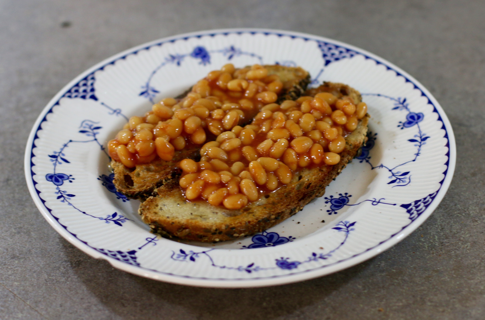

Home
How YOU Can Make Beans on Toast!

Ingredients
- 1 tin of baked beans
- 2 slices of bread
Equipment
- Tin opener
- Saucepan
- Stove
- Mixing spoon
- Toaster
- Serving plate
Instructions
- Use the tin opener to open the tin of beans and empty into the saucepan.
- Set the stove to a medium heat and place the saucepan onto it, regularly stirring the beans with the spoon to cook evenly and prevent sticking.
- After 3-4 minutes of cooking, turn off the heat and leave the beans to cool.
- Insert the 2 slices of bread into the toaster, set your desired level and toast.
- Once the toast is ready, transfer onto the plate. Pour the beans from the saucepan onto the toast and enjoy your beans on toast!